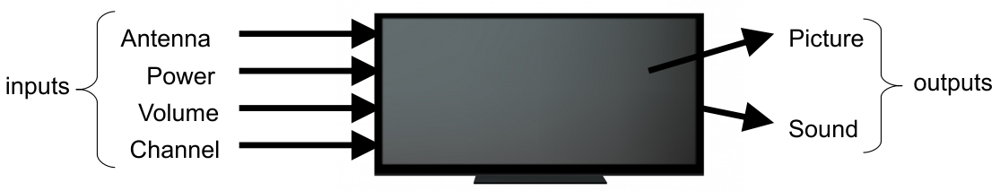
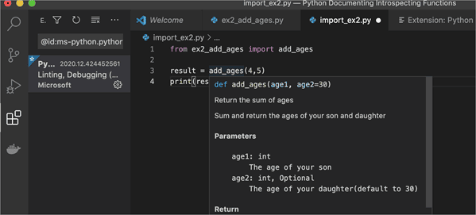
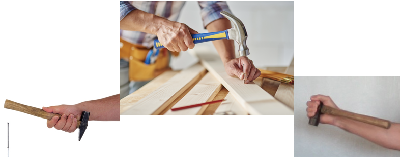
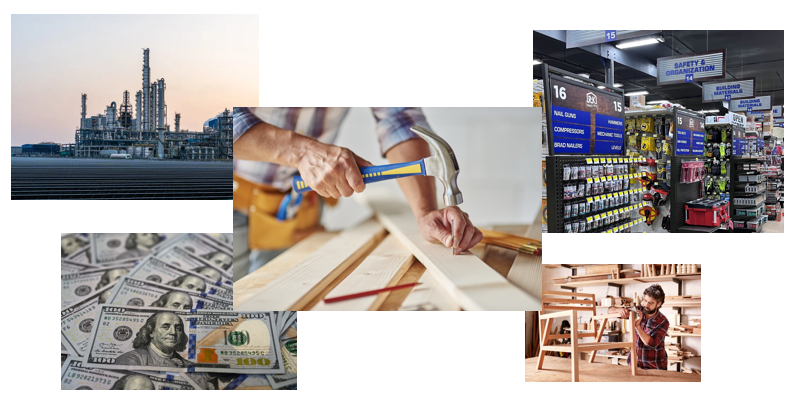
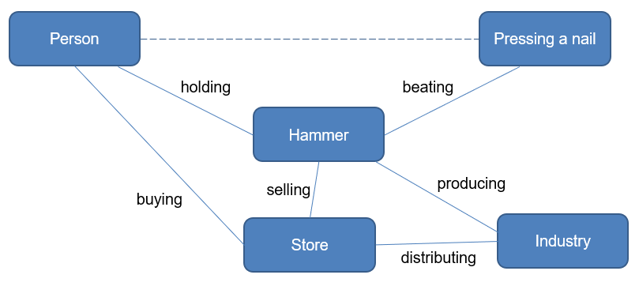

def function_name():
statement1
statement202-21-24 (Wednesday)
Lord, you reveal your glory in every thing you made
Let us today engage with this creation so that we may participate in your beauty and wisdom
May the technology we use or even develop point us toward that,
Instead of dragging us towards our own vicious desires and illusions of freedom
Help us, and our society, to know your ways and be still, for yours is the glory
And our hearts are restless till they find rest in You.
Amen.
1 Abstraction
Abstraction is the process of ignoring details to focus on the big picture
Example: consider a television
- Most people don’t know how a TV works, but they can still use it
- A TV can be abstracted as box with inputs and outputs as follows:

- Abstractions hide the details and make your solutions reach other people.
- Example: prefab mods in building games - you download the item and create it in your game.
2 Functions
Functions in Python are ways to “encapsulate” parts of code in order to be organized and reused
A programmer who uses a function does not need to know how a function works. He just informs the inputs and outputs!
Example:
math.sqrt(3)- Input: what is inside the parentheses:
3 - Output: what is the expression evaluated to:
1.7320508075688772
- Input: what is inside the parentheses:
2.1 Why use functions?
- Programs could be written without functions and all code written in one block, but:
- the program it would become large
- a lot of code would be duplicated
- Breaking big programs into smaller functions:
- allows work to be divided among several programmers
- enables functions to be re-used in other programs
- makes testing and maintenance easier
- improves readability
2.2 Defining a function
- Python has many built-in functions like
print(), but you can also create your own functions- these functions are called user-defined functions
- The code to be executed when the function is called needs to be indented - “inside” the function definition
- The code inside the definition will not run unless it is called later!
- The name for a function should follow the same general rules as for variables - as they also are variables pointing to objects.
- Functions are also objects: of the “callable” type. Check, for example,
type(print).
- Functions are also objects: of the “callable” type. Check, for example,
2.3 Examples
# define the function
def greeter():
print('Hello world!')
# call the function
greeter()Hello world!# define function
def print_square():
print('****')
print('****')
print('****')
print('****')
# call the function
print_square()****
****
****
****- What is the flow of execution of the programs above? (state the sequence using the line numbers)
3 Input: parameters
- Parameters are function inputs
- They are also local variables inside functions and exist only as long as the function is executing
For example:
def greeter(name):
print('Hello', name)
greeter('Bob')Hello Bob- The variable
nameis the parameter of the functiongreeter. - When
greeteris called, the string objectBobis passed as an argument of the function- Then,
Bobis assigned to the variablenamewhen the code insidegreeteris running.
- Then,
3.1 Multiple parameters
import turtle
def draw_square(pen, size):
for i in range(4):
pen.forward(size)
pen.left(90)
t = turtle.Turtle()
draw_square(t, 100)- Notice that parameters may be called in order
- If we don’t want to follow this order, or we want to specify which parameter receives what, we simply state the names of the parameters:
draw_square(pen=t, size=100)What happens if we don’t specify all the parameters?
import turtle
def draw_square(pen, size):
for i in range(4):
pen.forward(size)
pen.left(90)
t = turtle.Turtle()
draw_square(100)3.2 Preset parameters
- We can pre-specify the values of some parameters by assigning some value to them in the definition
- This also makes the parameter assignment optional when the function is called: see
draw_square(t)- The function will run every time as if
size=100, unless we say different
- The function will run every time as if
- This also makes the parameter assignment optional when the function is called: see
import turtle
def draw_square(pen, size=100):
for i in range(4):
pen.forward(size)
pen.left(90)
t = turtle.Turtle()
draw_square(t)4 Output: return statement
- Function outputs are specified with a
returnstatement
def cumulative_sum(n):
total = 0
for i in range(1,n+1):
total += i
return total
print("Cumulative sum from 1 to 4 is", cumulative_sum(4))Cumulative sum from 1 to 4 is 10- Notice that the function call
cumulative_sum(4)will evaluate to the integer number10.- In other words, the function returns an object of type
int. - Try “playing” with these calls. For example, call
cumulative_sum(cumulative_sum(4))
- In other words, the function returns an object of type
4.1 return always exits the function!
def compute_it(x, y, z):
print("Calling compute_it")
w = x + y / z
return w
print("Done!") # this will never be executed
y = compute_it(1,2,3)Calling compute_it4.2 What if I don’t use return?
- If a function has no return statement, Python returns from the function after the last statement is executed
- The output of a function without
returnis the null object, which in Python is calledNone. For example:
def hello():
print("Hello World!")
x = hello() # assigning the output of function hello() to x
print(x)
x = print("Hello") # assigning the output of the built-in function print() to x
print(x)Hello World!
None
Hello
None4.3 Returning multiple values
- It is possible to return multiple values as a tuple:
def cumulatives(n):
c_sum = 0
c_prod = 1
for i in range(1,n+1):
c_sum += i
c_prod *= i
return c_sum, c_prod
a, b = cumulatives(4)
print("Cumulative sum is", a, "and cumulative product is", b)Cumulative sum is 10 and cumulative product is 245 Variable scope
Every Python variable has a scope, defining where it is created and who/when this variable can be accessed
GLOBAL SCOPE: all functions have access to them.
- These are created in the program’s main code chunk (“outside functions”)
LOCAL SCOPE: only the function who created it has access to it
- Parameters are also local variables
- Local variables cease to exist when the function finishes!
a = 5 # a is a global variable
b = a + 1 # b is a global variable
def fun(d): # d, as a parameter, is a local variable
c = 7 + a + d # c is a local variable
print(c)
fun(1)135.1 Scope rules
- Variables in different scopes can have the same names!
a = 5
def fun1():
a = 1
print(a)
def fun2():
a = 3
print(a)
print(a)55.2 Scope rules
- Local variables have precedence over global variables!
a = 5
def fun1():
a = 1
print(a)
def fun2():
a = 3
print(a)
fun1()
fun2()
print(a)1
3
55.3 Example
- What are the local and global variables in the following program?
x=4
def main():
f1(3)
f2(3)
print(x)
def f1(a):
x = 10
print('f1',a+x)
def f2(a):
c=10
print('f2',a+x+c)
main()f1 13
f2 17
46 Docstrings
- The PEP8 standard requires docstrings for functions, describing what the function does.
- This comment should appear after the
defline - The
'''that ends a multiline docstring should be on a line by itself - These docstrings can be accessed in many IDEs, facilitating development
- This comment should appear after the
def cube_volume(side_length):
''' Compute the volume of a cube
Parameter: side_length is side length of cube
returns: volume
'''
volume = side_length ** 3
return volume6.1 Using docstrings in development

7 Functions are mediators of action
Functions, as every technological tool, give us the power to do something. However…
I only have the power to do something with a tool if I submit to the rules of the tool

- I only have the power to do something with a technology if I submit to the world that makes the technology possible.

- Let’s represent this as a network of mediators:

Can you think about more actors in this network? (By the way, this type of analysis is commonly referred as Actor-Network Theory)
Thus: one doesn’t simply ‘use’ a technology. You also ‘use’ the whole world around the technology. If someone does something, everyone is also doing something. The actor is the network, the network is the actor. This is also referred to as an [assemblage](https://en.wikipedia.org/wiki/Assemblage_(philosophy)
- Think about more examples…
“Technology produces, defines and constrains a series of subsequent options that can be selected by the user, and the selection of these options depends, in turn, on a broader technological application. In short, we are not free to use various technologies in the way we choose, [since] whoever chooses is shaped by the choices being made or contemplated. Moral vision, and therefore also moral evaluation, is enveloped by a set of values that are imposed by technological potential rather than the other way around.” –George Grant, Technology and Empire
- How does that happen in programming? To achieve something with programming, you need:
- A standardized programming language (eg. Python)
- Other libraries and functions implemented in Python
- A Python compiler/interpreter
- An operating system which runs Python, its compiler/interpreters, and its libraries (Windows, Linux, Mac)
- A PC or other similar device, which requires:
- Microelectronics and hardware industry
- Industrial standards and interfaces (IEEE, ISO), etc.
- What more?
- Question: is it a good thing to rely on all the mediators around our technology? Could we be accomplices in propagation of evil?